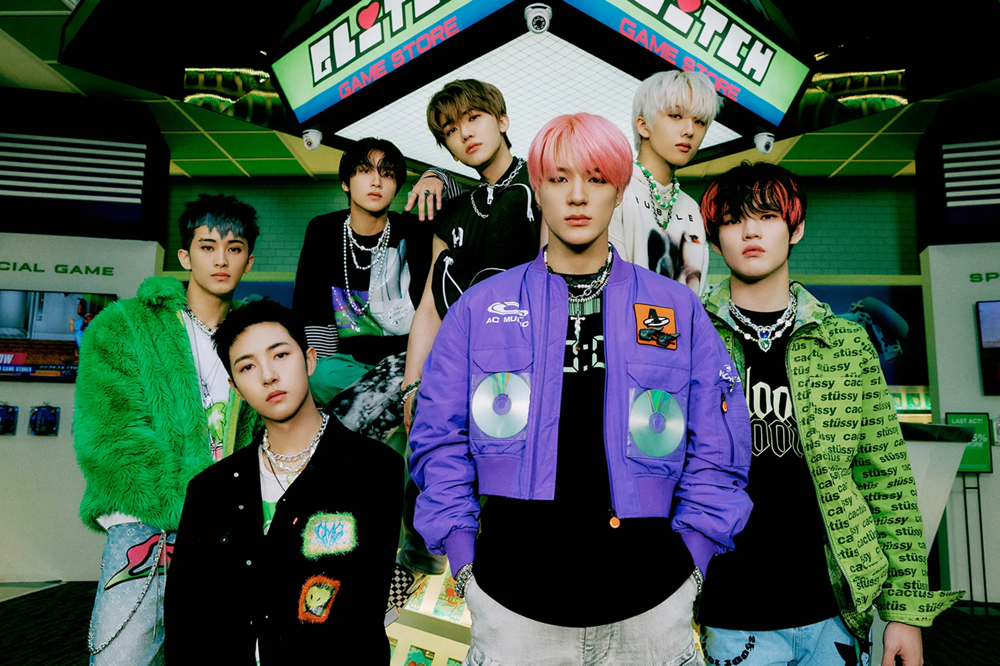

Soy una ingeniera química que desarrollo un gusto por la técnología gracias a la beca de Tecnolochicas México para Desarrollo Web, este bootcamp me permitió aprender lo básico de HTML, CSS y BootsTrap para el diseño de páginas web.
Meses después pude tomar otro beca con ellas de Ciencia de Datos, donde aprendí procesamiento y análisis de datos con Python junto a Machine Learning y después de tres meses pude presentar mi proyecto final que realicé junto a un equipo de trabajo
Actualmente me encuentro en Generation y !Estoy muy emocionada!, parece incríble poder seguir aprendiendo en este camino de la tecnología y espero que esto sea solo el principio de este camino.
Me encanta el kpop, mis grupos favoritos son; Super Junior, Exo, NCT, RIIZE, Red Velvet, New Jeans, Shinee, Twice y BigBang
Pero uno de mis artistas favoritos es DPR Ian, su trabajo es impresionante.
¡Esta es una de mis canciones favoritas!...
...
Mi objetivo es seguir creciendo como desarrollador web y también en la ciencia de datos para poder aplicar mis conocimientos de ingeriería en mejora continúa de procesos.